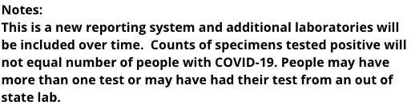

Michigan now have a new system which report much more information
Issue number 144
atzhh opened this issue on April 4, 2020 at 8:29 pm
https://www.michigan.gov/coronavirus/ and then click see cumulative data.
Also, for Arizona, you should use the negative number reported in test section lower right corner instead of just put the total. Not a significant difference though.
careeningspace commented on April 5, 2020 at 6:34 am
Yes - The difference is that Michigan is reporting specimens, not people tested. We have been reaching out to the state in hopes of more accurate people data.
From the state website: 
careeningspace closed the issue on April 5, 2020 at 6:34 am
careeningspace commented on April 5, 2020 at 6:39 am
@atzhh Regarding AZ - we calculate the total negatives because the chart you are referring to appears to be slightly out of sync with the totals and positives being reported at the top of the dashboard.
Michigan negative counts are now almost 3X what is being reported on https://covidtracking.com/data#state-MI
As shown below, Michigan reports 30,030 negative tests vs 11,893 reported on covidtracking.com.
https://www.michigan.gov/coronavirus/0,9753,7-406-98163_98173---,00.html
Cumulative Number of Specimens Tested for COVID-19 - Last Updated 4/4/2020 15:00